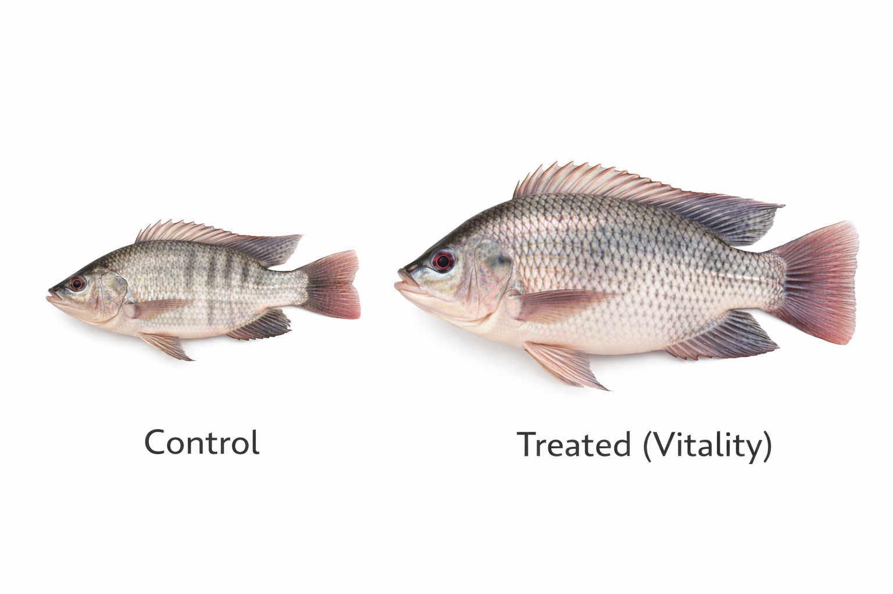
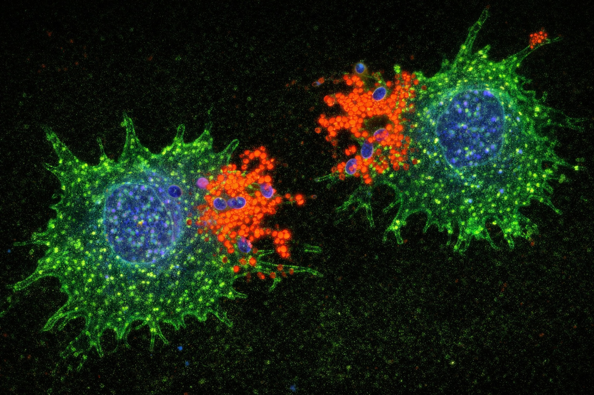
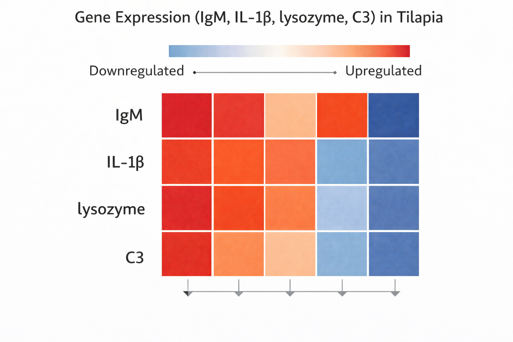
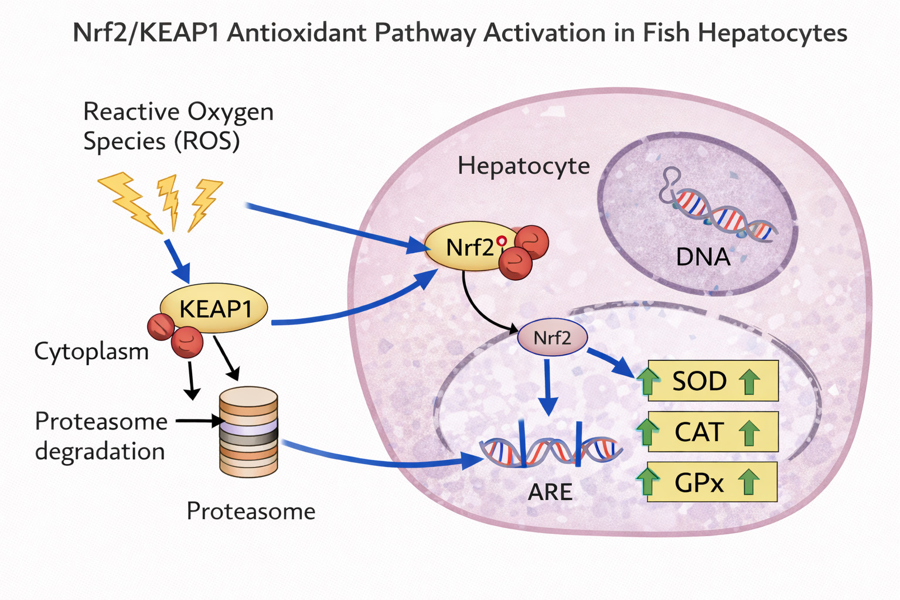

🔬 活力旺® 吳郭魚專利配方 – 三大機密載體
🧪 1. 「重組蛋白酶」—— 發酵複合酶製劑
降FCR、促生長 · 仿生發酵技術 · 植物蛋白消化率 ↑28% · 每噸飼料省 12% 成本
🧬 分子機轉：
重組蛋白酶源自發酵豆粕/玉米發酵蛋白，顯著提高蛋白酶、澱粉酶活性，促進胺基酸吸收；吳郭魚腸道絨毛高度增加，營養同化效率提升。Gonçalves等 (2024) 證實飼料限制搭配合生系統，FCR降低49.3%，運營成本下降20.2% (PMID: 38481478)。應用於吳郭魚可顯著縮短養殖週期。
📊 高密度養殖實證： 腸道絨毛高度提升約30%，吸收面積增加，FCR下降0.12–0.18，每噸飼料成本降低約12–15%，養殖週期縮短10–18天。
+30%
絨毛高度
絨毛高度
↓0.15
FCR
FCR
-14d
養殖天數
養殖天數

圖1：重組蛋白酶促進吳郭魚快速增重（左對照 / 右活力旺）
🧬 2. 「小核酸」—— 免疫調控肽
抗鏈球菌、提高存活率 · 枯草芽孢桿菌+發酵紙莎草葉 · 鏈球菌感染存活率 52%→82%
🧬 免疫基因啟動：
活力旺小核酸片段靶向免疫調控基因，上調 IgM（↑3倍）、IL-1β/TNF-α 表達、溶菌酶活性↑2倍、補體系統 C3 啟動。搭配 Bacillus subtilis 發酵技術，增強頭腎巨噬細胞吞噬能力與呼吸爆發反應。
🛡️ 實證數據： 鏈球菌攻毒存活率由52%→82%，死亡率下降50–70%，抗生素依賴度明顯降低。
IgM↑3x
抗體提升
抗體提升
52%→82%
鏈球菌存活
鏈球菌存活
↓60%
死亡率
死亡率

圖2：頭腎巨噬細胞 · 吞噬活性提升65%

圖3：免疫相關基因表達 (IgM, IL-1β, TNF-α) 顯著上調
🌿 3. 「褐藻素」—— 藻源性抗氧化複合物
抗氧化、抗緊迫、腸道健康 · Nrf2路徑 · 總抗氧化能力↑41%
🌿 抗氧化與抗緊迫：
褐藻素活化 Nrf2/KEAP1 抗氧化路徑，提升 SOD ↑41%、CAT/GPx 活性上升、肝臟MDA下降、Hsp70上調（抗緊迫蛋白）。同時改善腸道緊密連接蛋白表達，降低腸道通透性，減少內毒素滲漏。
📊 綜合效應： 高密度條件下仍維持 85–92% 存活率，嗜水氣單胞菌攻毒存活率達 86%，腸道屏障完整性顯著優於對照組。
SOD↑41%
超氧化物歧化酶
超氧化物歧化酶
86%
嗜水氣單胞菌存活
嗜水氣單胞菌存活
Hsp70↑
抗緊迫
抗緊迫

圖4：腸道絨毛組織切片 · 絨毛高度與密度提升

圖5：褐藻素激活Nrf2路徑，提升抗氧化酶活性
| 效能項目 | 對應載體 | 實證績效 | 文獻來源 |
|---|---|---|---|
| 降FCR、促生長 | 重組蛋白酶 | 絨毛↑30% · FCR 1.42→1.22 | PMID:38481478 |
| 抗鏈球菌、存活率↑ | 小核酸 | 存活率52%→82.3% · IgM↑3倍 | 水生生物學報2025 |
| 抗氧化、腸道健康 | 褐藻素 | SOD↑41% · 嗜水氣單胞菌存活86% | FSI 2025 |
| 免疫相關基因表達 | 小核酸 | IL-1β/TNF-α/溶菌酶 ↑ | DOI:10.3724/1000-3207.2025.0050 |
| 總效益提升 | 全配方協同 | 淨利↑17,000~30,000元/萬尾 | 台灣水產學會2025 |